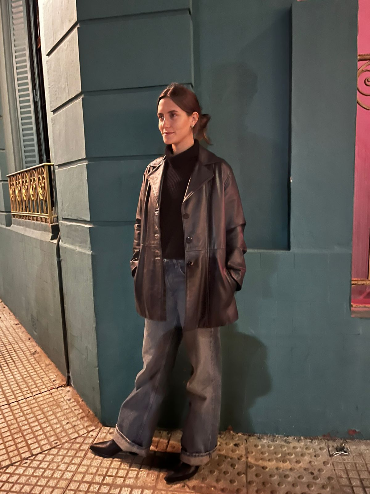

Candelaria
Maqueda
Edad: 27 años
📍 Costa Rica
🎓 Comunicación Digital
psychology
Habilidades
Gestión de Proyectos Creativos
Diseño & Branding
Comunicación & Presentación
Estrategia de Contenidos
movie
Películas Favoritas
1. Interstellar
2. The Theory of Everything
3. Good Will Hunting
music_note
Discos Favoritos
1. Newman (I love) "I love therefore I am" 20219
2. Hermanos Gutierrez "Hijos del Sol" 2020
3. Angus & Julia Stone "Down the Way" 2010